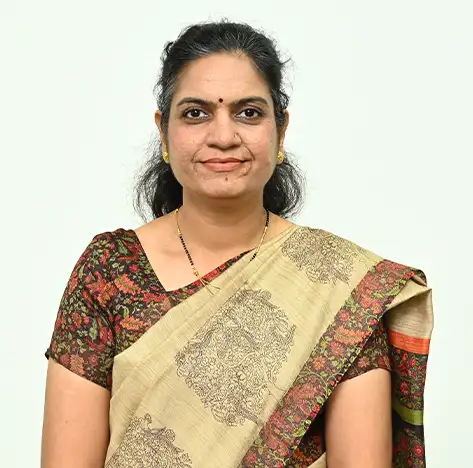

Dr. Vaidehi Vaibhav Deshmukh
Assistant Professor

Assistant Professor
Dr. Vaidehi Vaibhav Deshmukh is an accomplished Electronics and Communication engineering faculty member with a wealth of experience teaching Computer Engineering subjects, including Machine Learning, Python, and Java Programming. Their doctoral research focused on image fusion using image processing-based algorithms, and they have developed their own algorithm for image fusion. They have published a book on Image Fusion and a book chapter on image fusion, demonstrating their expertise in this area. Dr. Deshmukh is actively involved in curriculum development, delivering effective lectures, achieving course outcomes, and managing projects. They possess strong administrative, leadership, and communication skills, and their administrative responsibilities involve communicating with SY B Tech students regarding their course enrollment, conducting student orientation, registering students in the ERP system, monitoring their progress, and providing mentorship. With research publications in Scopus/WoS indexed international journals and conferences, Dr. Deshmukh has also worked on various projects related to image fusion, emotion detection, disease detection, object detection, and more. They possess excellent proficiency in MS Excel, Python Programming, MATLAB, and have collaborated with industries to assist them in solving problems in the domain of AI machine learning and deep learning. In addition, Dr. Deshmukh has upgraded their skills in Artificial Intelligence and Data Science through a KPMG course and has conducted and organized workshops for students on various topics like scilab programming, deep learning, python programming, tableau dashboard, and more.
image processing, deep learning